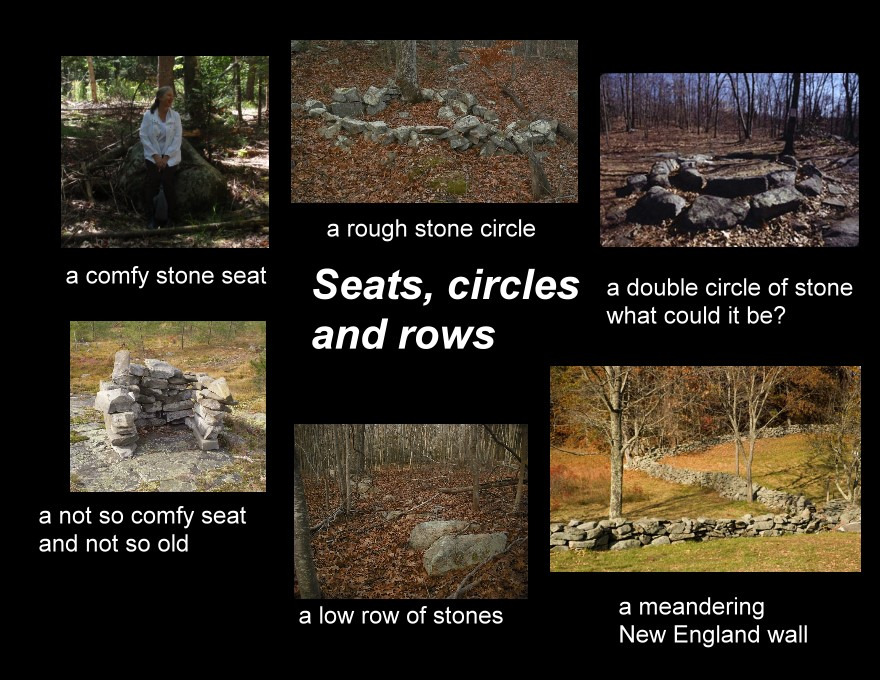

Often rough stones are laid out in circle, but their meaning is unknown. Others more geometrically organized resemble western"medicine wheels" and may also have astronomical alignments. This doublecircle may have served a utilitarian need such as a grinding trough. Stone seats maybe U shaped enclosures probably used for vision quests, astonomical viewing, perhaps hunting blinds, or some other unimagined purpose, while long rows or single large rocks meadering willy-nilly through the wood may be very old for an unknown purpose or simply "Colonial clutter."
For Want of a Nail: An Analysis of the Function of Some Horseshoe or "U"-Shaped Stone Structures by Edwin C. Ballard
This article was previously published in the NEARA Journal, Volume 34, Number 2, Winter 2000 & the Bulletin of the Massachusetts Archaeological Society,Volume 60, Number 2, 1999.
For many reasons there has been a paucity of in-depth analysis of the myriad of stonework remnants that exist on the rough terrain of the backlands of New England. Much of it is the work of 18th and 19th century Euro-american farmers, such as walled field boundaries (Allport 1990), walled building foundations, and stone storage structures (Neudorfer 1980). Glacial debris abounds. There are, however, other enigmatic structures that remain unexplained. This discussion makes a case for Native American construction and use for one class of these, a “U”-shaped construct. The lack of analysis has deep roots. It originates in the Contact period Puritan colonists’ struggle to survive. It derives from their religious mindset (Fischer 1989) that resulted in laws banning the practice of Native American religion, and attitudes that strongly influenced historical scholarship into the 20th century (Jennings 1976). Added factors include the early disruption of Native American social structure due to the effects of imported diseases (Salisbury 1982), middle 17th century warfare (Jennings 1976), and academic paradigms such as “Indians of the Northeast did not use stone architecture” (Hall and Woodman 1972). The latter paradigm has served as a serious impediment to extensive professional involvement in an indepth evaluation of residual lithic structures in New England. It has contributed to minimizing meaningful dialogue.
Read full article (PDF): FOR WANT OF A NAIL By Edwin C. Ballard, NEARA Journal vol. 34 No. 2, Winter, 2000